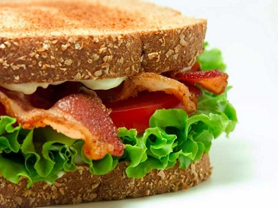

Meat Loaf Sandwich
R 25.00
Prep time:
20 mins
Yield: 8-10
Ingredients
2 pounds of ground chuck
4 ounces onions,finely chopped
3 ounces Worcestershire sauce
3 ounces ketchup
2 cups soft bread crumbs
3 eggs, beaten
1/2 teaspoon black pepper
1 teaspoon salt
3-6 slices bacon (medium to thick cut preferred)
Steps
Combine and thoroughly mix all ingredients being careful to mix lightly (mixing too vigorously will cause the meatloaf to be tough)
Form one or two meat loaves and place in one or two loaf pans
Top each loaf with 3 slices of bacon
Bake in 350 degree F oven for about one hour and 10 minutes
Drain off fat
Let sit several minutes before slicing or refrigerate and slice cold
BUY / PLACE ORDER